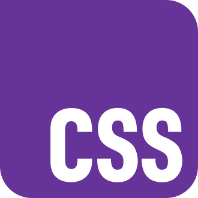
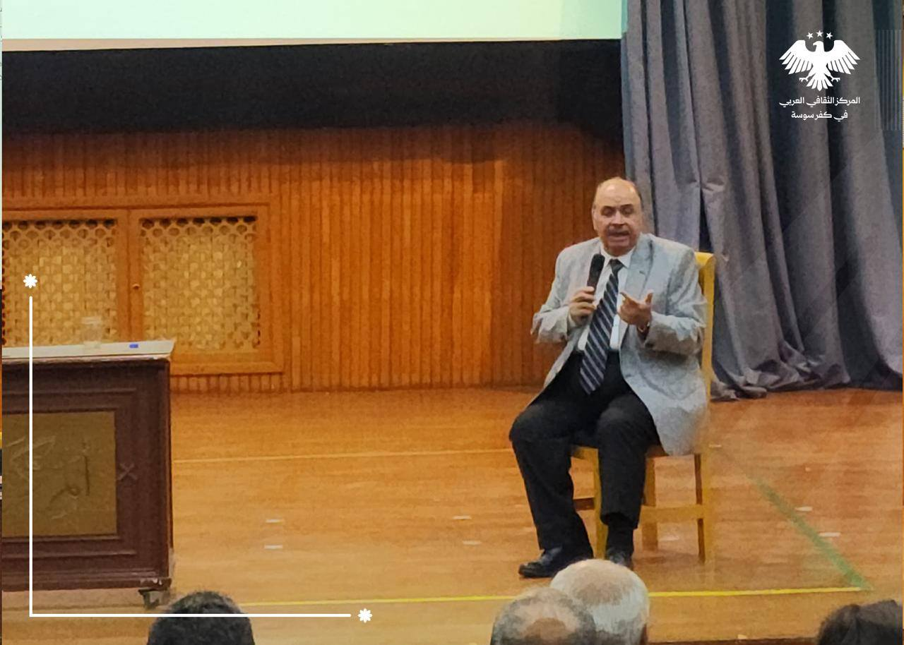

عن فعالية تاسيس برمجي
التاريخ: 17 سبتمبر 2026
المكان:الهمك-كلية الهندسة المعلوماتية
تأسيس البرمجة يرتكز على فهم الخوارزميات، هياكل البيانات، ومنطق البرمجة عبر لغات مثل Python أو C++، وليس مجرد تعلم لغة واحدة. تبدأ الدورة المثالية بتعليم أساسيات المتغيرات، التكرار (Loops)، والشروط، وتتدرج إلى التطبيق العملي وبناء مشاريع صغيرة لتعزيز التفكير المنطقي.

يُكتب الكود بلغة برمجة محددة - وهناك العديد من اللغات، مثل C++ وجافا وبايثون وغيرها. يمكن أن يتكون الكود من خوارزميات وصيغ وكائنات ووظائف وفئات تعالج البيانات لإنجاز كل مهمة.
كما يمكنك ايضا تأسيس برمجة المواقع يشمل تعلم HTML للهيكلة، CSS للتصميم، وJavaScript للتفاعل، وهي الأساسيات الضرورية لأي مطور ويب (Front-end أو Back-end). تبدأ الدورة بأساسيات الواجهات (HTML/CSS) وتنتقل إلى التفاعل، ثم لغات البرمجة الخلفية مثل PHP أو Python، مع تطبيق عملي عبر مشاريع واقعية لتأهيلك لسوق العمل



عن الفعالية المسابقة الثقافية
التاريخ: 27 سبتمبر 2026
المكان:المركز الثقافي
تتنوع محتويات المسابقات الثقافية لتشمل مجالات معرفية شاملة تهدف إلى تعزيز الثقافة العامة، وتشمل الأسئلة الدينية، التاريخية، الجغرافية، واللغوية. تركز هذه المسابقات عادةً على تنشيط العقل، قياس سرعة البديهة، وتطوير المهارات الأدبية والفنية، مما يخلق بيئة تعليمية ممتعة وتنافسية
أبرز مجالات ومحتويات المسابقات الثقافية: الثقافة العامة والعلوم: أسئلة حول الجغرافيا (أطول أنهار، عواصم)، العلوم، الفلك، المكتشفون والمخترعون، والأرقام القياسية. المجالات الدينية: وتشمل السيرة النبوية، القرآن الكريم وعلومه، الفقه الإسلامي، وسير الصحابة والتابعين. التاريخ والأدب: معلومات عن الحضارات القديمة والمعاصرة، الشخصيات التاريخية المؤثرة، بالإضافة إلى الشعر، النثر، القصة، والرواية. اللغة العربية: اختبارات في النحو (علاّمات الإعراب، الأفعال الخمسة)، مفردات اللغة، والإملاء. الفنون والمهارات: مسابقات أدبية (شعر نبطي/فصيح)، ورش عمل إبداعية، ومهارات الإلقاء والنقد

عن الفعالية البرمجية ICPC
التاريخ: 11 اغسطس 2026
المكان:كلية الاقتصاد-حلب
لمسابقة البرمجية للكليات الجامعية ICPC تعتبر المسابقة الدولية البرمجية للطلاب الجامعيين ICPC مسابقة البرمجة الأولى التي تنظمها الجامعات على المستوى العالمي. على مدار أكثر من أربعة عقود، نمت ICPC لتصبح برنامجاً تعليمياً عالمياً تنافسياً متغيراً في عالم الألعاب، مما أدى إلى رفع مستوى التطلعات والأداء للمتنافسين في هذه المسابقة، في علوم الكمبيوتر والهندسة. تتولى إدارة المسابقة البرمجية ICPC Foundation المستضافة في جامعة بايلور الاميركية تنظيم هذه المسابقة منذ عام 1977 وبرعاية جمعيتي ACM و Upsilon Pi Epsilonالأمريكيتين.
.jpg)
.jpg)
.jpg)